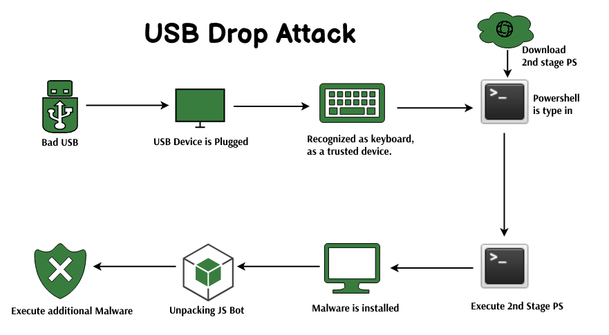

USB Drop attack
The USB drop attack falls under the category of client-side attacks within the realm of system hacking.
This method requires the attacker's physical proximity to the target, enabling them to insert a malicious
USB device into the victim's computer and initiate the attack. This approach is often exploited by
cybercriminals to illicitly access data, introduce malware into a susceptible PC, or even execute
ransomware on the victim's system.
The attack manifests through various vectors, including infected
CDs/DVDs, inserted SD cards, or even activated Bluetooth connections, triggering automatic malware
downloads onto the victim's computer during synchronization with another nearby device.

How a USB Drop Attack Works
USB Drop attack is used for remotely taking control or snooping into other devices by misguiding a user. Let's see how it works:
Planting the USB Device
The attacker leaves a USB device, often disguised as an innocuous object like a flash drive,
in a place where it's likely to be found. This could be in a public area, parking lot, or even
inside an organization's premises.
Social Engineering
The attacker may label the USB device with tempting labels like "Confidential Information," "Salary Details," or
something that piques curiosity. This encourages users to plug the USB device into their
computers to see what's on it.
Malicious Payload
The USB device is loaded with malware, such as a keylogger, ransomware, or backdoor Trojan.
As soon as the user connects the USB device to their computer, the malware is executed.
infection
The malware gains access to the victim's system and may carry out various malicious activities,
depending on the type of payload. For example, a keylogger could record keystrokes, while ransomware
could encrypt files and demand payment for decryption.